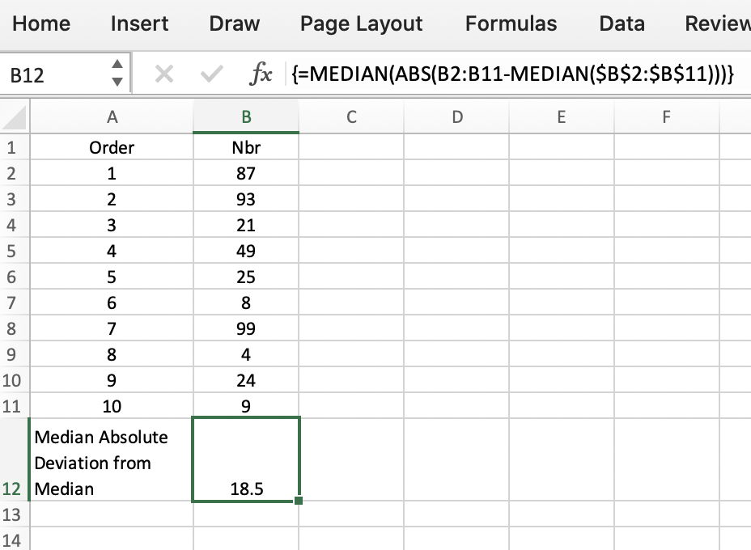
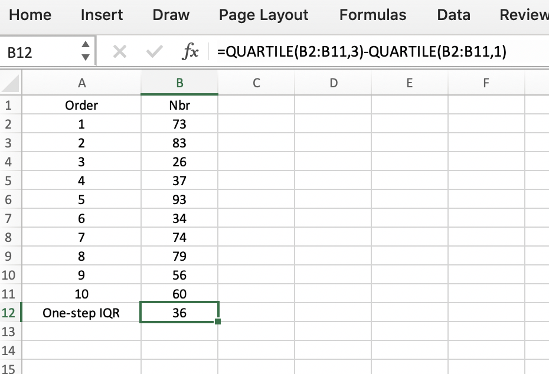

Background Info

Karl Pearson, 1912 Coined the term "standard deviation".
Variability: also known as dispersion, is a characteristic of a dataset, and describes how the data is spread. Some of the common metrics used to describe dispersion are:
- Variance
- Standard Deviation
- Mean absolute deviation
- Median absolute deviation from the median
- Range
- Order statistics
- Percentile
- Interquartile range
Why is this important?
Variability is at the heart of statistics, as it is used to make decisions.
Table of Content
Variance aka "Mean-squared-error"
Definition: The sum of squared deviations from the mean divided by n - 1, where n is the number of data values in the dataset.When to use:
Use when you want to evaluate how individual numbers relate to each other in the data set. Example:
The variance is calculated in groups that will be tested in an ANOVA. If the 'variances' are equal, and if the other assumptions are met, then a standard ANOVA can be conducted.
What to consider:
Since this estimate relies on the mean of the dataset, it is sensitive to outliers. Outliers are values in your dataset that are very different from most of the data.
Calculate the Variance using R programming
Calculate the Variance using Python
Download Jupyter Notebook FileCalculate the Variance using Excel
There are various VAR version (VAR.P, VAR.S...) added along newer version of excel, but VAR works fine.VAR(Number1, [Number2], ...)
Standard Deviation
The square root of the variance. Synonyms: 12-norm, Euclidean norm. When to use:The standard deviation is easier to interpret than the variance, because its value is in the same units as the data. A high value indicates that the data is very spread from the center, while a low value, indicates that the data clusters to the center of the data. You use this formula on continuous data. (Not categorical data!) Standard deviation is sensitive to outliers.
Calculate the Standard Deviation using R programming
Calculate the Standard Deviation using Python
Download Jupyter Notebook FileCalculate the Standard Deviation using Excel
=STDEV(number1,[number2],...)
Mean Absolute Deviation
Definition: The mean of the absolute value of the deviations from the mean. Also known by its acronym, MAD. When to use:The MAD is a useful indicator of the values within the set. The larger the MAD value gets, the less relevant is the mean as an indicator of the values within the set.
Calculate the Mean Absolute Deviation using R Programming
Calculate the Mean Absolute Deviation using Python
Download Jupyter Notebook FileCalculate the Mean Absolute Deviation using Excel
=AVEDEV(number1, [number2], ...)
Median Absolute Deviation from the Median
Definition: The median of the absolute value of the deviation from the median.When to use:
Simplified:
This is a robust measure of how spread the data set is when the data is not normally distributed.
Calculate the Median Absolute Deviation from the Median using R Programming
Calculate the Median Absolute Deviation from the Median using Python
Download Jupyter Notebook FileCalculate the Median Absolute Deviation from the Median using Excel
Range in this example: B2:B11=MEDIAN(ABS(B2:B11-MEDIAN($B$2:$B$11)))

Range
Definition: The difference between the largest and smallest value in the data set. When to use:The range is a smile estimate to calculate, and if the value is large, then the data is spread, but if the value is small, the values in the series are close to each other.
Calculate the Range using R Programming
Calculate the Range using Python
Download Jupyter Notebook FileCalculate the Range using Excel
Order Statistics aka "Ranks"
Definition: A metric that is based on the data values sorted from their min to max values. When to use:Calculate the Ranks using R Programming
Calculate the Ranks using Python
Download Jupyter Notebook FileCalculate the Ranks using Excel
RANK(number,ref,[order])
Percentiles aka "Quantile"
Definition: Is a measure used to indicating the value below which a given percentage of observations in a group of observations falls. When to use:Calculate the Percentile using R Programming
Calculate the Percentile using Python
Download Jupyter Notebook FileCalculate the Percentile using Excel
=PERCENTILE.EXC(array,k)
Interquartile Range aka "IQR"
Definition: The difference between the 75th percentile and the 25th percentile. When to use:Calculate the Interquartile Range using R Programming
Calculate the Interquartile Range using Python
Download Jupyter Notebook FileCalculate the Interquartile Range using Excel
=QUARTILE(B2:B11,3)-QUARTILE(B2:B11,1)